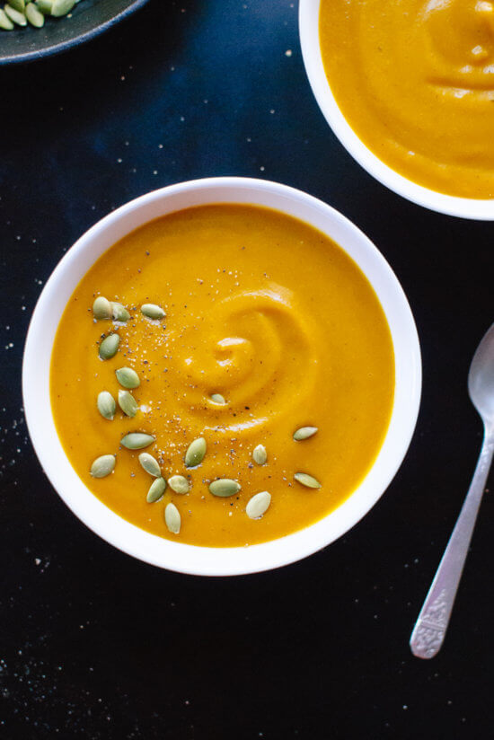

Pumpkin Soup

Description
This pumpkin soup recipe is creamy AND healthy! It calls for roasted pumpkin for maximum flavor. This roasted pumpkin soup recipe would look lovely on your holiday dinner table, and leftovers would go great with sandwiches or salads the next day. Recipe yields 4 bowls or 6 cups of soup.
Ingredients
- 4 tablespoons olive oil, divided
- One 4-pound sugar pie pumpkin
- salt as required
- 1 large yellow onion, chopped
- ½ teaspoon ground cinnamon
- ½ teaspoon ground nutmeg
- Tiny dash of cayenne pepper (optional, if you like spice)
- Freshly ground black pepper
- 4 cups vegetable broth
- ½ cup full fat coconut milk or heavy cream
- 2 tablespoons maple syrup or honey
- ¼ cup green pumpkin seeds
Steps
- Preheat oven to 425 degrees Fahrenheit and line a baking sheet with parchment paper for easy cleanup.
- Slice each pumpkin halve in half to make quarters. Brush or rub 1 tablespoon olive oil over the flesh of the pumpkin and place the quarters, cut sides down, onto the baking sheet.
- Heat the remaining 3 tablespoons olive oil in a large Dutch oven or heavy-bottomed pot over medium heat. Once the oil is shimmering, add onion, garlic and salt to the skillet. Stir to combine. Cook, stirring occasionally, until onion is translucent, about 8 to 10 minutes. In the meantime, peel the pumpkin skin off the pumpkins and discard the skin.
- Add the pumpkin flesh, cinnamon, nutmeg, cloves, cayenne pepper (if using), and a few twists of freshly ground black pepper
- While the soup is cooking, toast the green pumpkin seeds in a medium skillet over medium-low heat, stirring frequently, until fragrant, golden and making little popping noises.
- Once the pumpkin mixture is done cooking, stir in the coconut milk and maple syrup.
- Ladle the soup into individual bowls. Sprinkle green pumpkin seeds over the soup and serve.